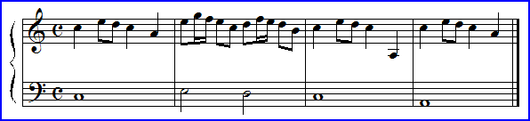
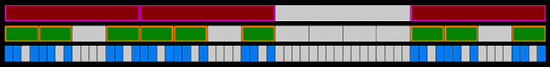

|  |
| For years Harlan Brothers has been studying and writing about fractal aspects of music. In particular, he is interested in structural scaling of music. That is, patterns of notes that, in some respect, repeat on successively larger scales. Often this pattern can manifest itself in subtle ways. |
| Despite the fact that rigorous analysis of certain aspects of musical structure requires highly specific knowledge of the subject, some patterns can be appreciated on an intuitive level. |
| Consider that we generally take for granted our ability to perceive cadence and inflection in spoken language; yet these sensitivities fundamentally inform, affect, and color our understanding of what might otherwise be dry written words. |
| For those with a keen ear or formal training, language of music behaves similarly. |
| For example, Reel One |
| Many songs across multiple genres are based on a structure in which a first section, A, is repeated and then followed by a B section that is harmonically or rhythmically different from the A section. These three sections are followed by a final A section. |
| A A B A |
| This AABA template can be used as the generator for a Cantor set. |
|  |
| Here is a map of this song showing its three levels of scaling. |
| Each of the small blue blocks represents one measure (4 beats) of music. |
| The green and red blocks represent 4 and 16 measures, respectively. |
| All measures of the same color contain exactly the same, ordered set of notes. |
| Each gray block of any size contains a set of notes that is different from the colored set to its right and left. |
© 2004 Harlan Brothers
Return to 1/f music